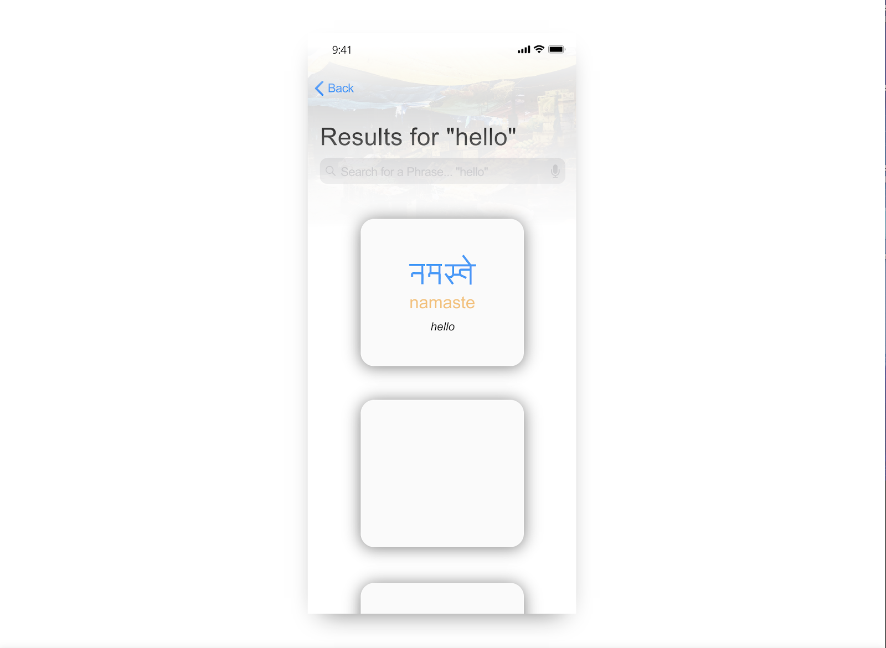
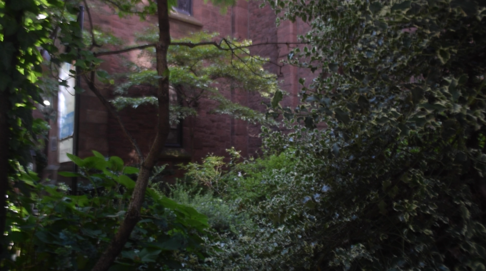

Five in Five
2018. NYC, USA.
How can the systems we use today guide us to have a deeper understanding of language, hisotry, and place?
The following is a five-day exploration, where every day research, experimentation,and documentation culminated in a new artwork. Fascinated in learning more about cultures, I used the first location presented by AirBnB.com as a source for guiding my art making practice, sending me to both familiar and unfamiliar locations. Every day resulted in an new discovery, a new interest, and a new idea I would like to continue along with.
DAY 01: Goa, Graphic Animation

When I was working in Mumbai, my host showed me a site called the Hinglish project. It’s goal was to show English speakers how to sound out Hindi letters written in the Devangari script. Whilst it may make unfamiliar characters approachable, it does not in fact assist in being able to read Hindi words. This sketch was an exploration is connecting English to Hindi, both distant cousins in the Indo-European language superfamily.
The AirBnB listing that inspired the following piece.
Original Hinglish project: "Namaste."
Working through the Hindi text, and creating new interpretations of the characters."
Link to the interactive protoype shown at top.
DAY 02: Selat, Bristol Weave
A study in paper folding and thatching techniques. I wanted to spend some time in the 5 in 5 with physical materials. After some unsuccessful folding explorations with Bristol paper, I switched to a classic weave. I found many similar techniques employed in room thatching in balinese homes I studied.
The AirBnB listing that inspired the following piece.
Weaving the weave.
Working through the Hindi text, and creating new interpretations of the characters."
DAY 03: San Francisco, Lasercut Maps
I am from the SF Bay Area, and also recently spent the summer working in San Francisco. Out of all of the locations I designed for in this exercise, this is the region I felt most connected to. I was drawn to the distinct neighbourhoods of the city, and wanted to see if their orders reflected the iconic and unique topography of the area. In creating the assets, I found drawing the borders of the neighbourhoods much easier than the topographic segments. Surely this is not coincidence…
The AirBnB listing that inspired the following piece.
DAY 04: London, Middle English Translation and Video
Starting to hone in on language, I became interested in translations, intepretations, and change over time. I researched Middle English, and how it borrowed and adapted many French words. I was also fascinated in accents, and how the way a passage is spoken can greatly alter how it wes interpreted.
This piece is an exploration in translations, in new meanings, and in the evolution of the Westen connection to self as a part of a broader society.
The following is a passage from Confessio Amantis by John Gower, written in the 1390's. It is in it's original Middle English spelling. Note how when read, it is quite easy to pick up the meaning behind the piece.
Of hem that written ous tofore
The bokes duelle, and we therfore
Ben tawht of that was write tho:
Forthi good is that we also
In oure tyme among ous hiere
Do wryte of newe som matiere,
Essampled of these olde wyse
So that it myhte in such a wyse,
Whan we ben dede and elleswhere,
Beleve to the worldes eere
In tyme comende after this.
Bot for men sein, and soth it is,
That who that al of wisdom writ
It dulleth ofte a mannes wit
To him that schal it aldai rede,
For thilke cause, if that ye rede,
I wolde go the middel weie
And wryte a bok betwen the tweie,
Somwhat of lust, somewhat of lore,
That of the lasse or of the more
Som man mai lyke of that I wryte:
The AirBnB listing that inspired the following piece.
On location at a Gothic revival church in Manhattan.

Link to final output
DAY 05: Ystad, Story and Graphic Comic
My final 5 in 5, I realised I had started to find a theme of translating and retelling aspects of the places I had been assigned by AirBnB. To complete the theme of translation, I had my girlfriend read me a simple Swedish story, which I would try to translate into English. This broken translation was fed sentence by sentence into google image search.
Folksaga efter bröderna Grimm. Det var en gång en rik man, vars hustru blev sjuk och dog. När så mannen gifte om sig hade den nya hustrun två döttrar med sig. De var vackra att se på, men svarta och elaka i hjärtat, de kallade mannens dotter för Askungen.
Landets konung skulle ställa till med en stor bal och prinsen skulle välja sig en brud bland de festande. Askungens styvsystrar skulle gå, men Askungen fick inte gå för styvmodern. Då kom hennes gudmoder och trollade så att hon fick klänning och vagn, men hon var tvungen att lämna slottet innan klockan tolv, för på tolvslaget bröts förtrollningen. I sin hast sprang hon ifrån en glassko.
Prinsen hade tyckt bäst om flickan i glasskon och sökte igenom hela landet för att hitta henne. Till slut fann han Askungen och de gifte sig och fick ett äventyrligt liv tillsammans.
Original Story. Read aloud by Valentina Mikrut
The AirBnB listing that inspired the following piece.
The final comic was produced by translating the spoekn text as best I could into English, then feeding the phrases, sentence-by-sentence, into Google images. The results are shown above..